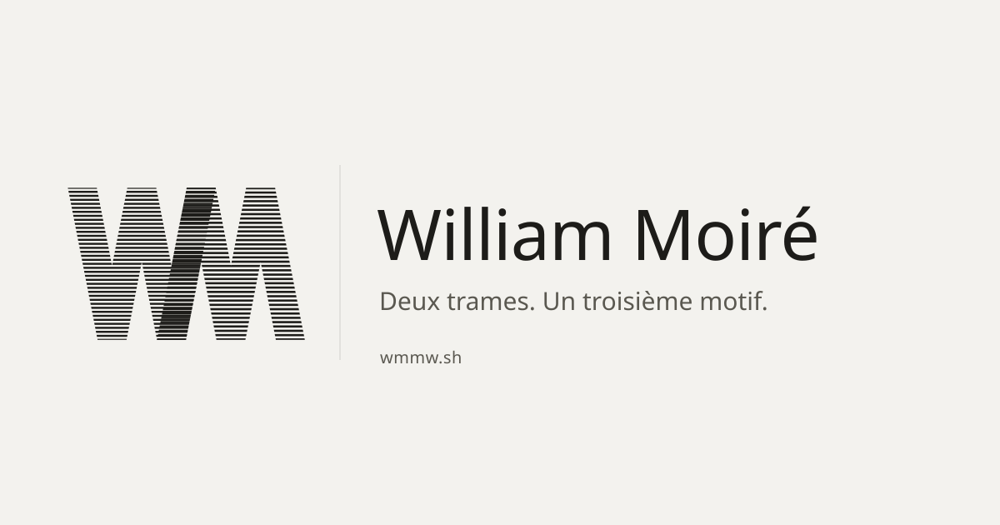

Deux trames, un léger décalage.
Le W porte une trame, le M une autre. Elles ne se croisent que dans le trait commun : c'est là que naît le motif. En miroir, il se lit M·W.
W·M William MoiréM·W Mycelic Wealth

og.svg · 1200 × 630
Rendue en PNG au build. Polices sous-ensemble embarquées, le fichier tient seul.